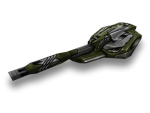

概括
镭射炮是游戏中最独特的炮塔之一，具有其他任何机器上都没有的多种功能。
它不仅能够通过轻按空格键向对手发射低功率子弹，而且按住它可以让用户通过瞄准镜将目标归零，
根据他们持有多长时间造成伤害空格键向下。
在这种情况下，镭射炮可以处理游戏中最高的每次射击伤害，但在进入狙击模式时会出现几个小问题。
按住空格键一段时间后，会开始出现制导激光，可能会暴露你的位置并吓跑潜在目标。
其次，可能更值得注意的是，您的坦克在此期间完全无法移动。建议使用中型或重型车体来使用此炮塔
车库中的描述
远程狙击炮塔。按住开火键可以进入狙击模式。
狙击模式下的伤害取决于你为射击充电的时间，你的坦克也将完全无法移动。
狙击战迷的绝佳选择。在常规模式下，炮塔可作为现代多功能武器综合体使用，用途惊人。
它可以煮咖啡、点披萨、支付支票，但在激烈的战斗中，它的工作方式与其他炮塔没有任何不同。
镭射炮的主要特色是二级狙击模式，进入该模式后，如果您对其进行充电，则可以显着提高射击的威力。
使用狙击模式需要坦克进入攻城模式，这意味着它不能移动。
将你的射击聚焦在敌人身上还将使用一个额外的激光指示器，
大多数现代坦克的光学系统都可以检测到它。
这就是为什么经验丰富的油轮建议永远不要长时间处于狙击模式，
否则你可能会打开你的背部以应对敌人的突然袭击。
装备改造
防御模块
射击效果
皮肤
镭射炮标准
镭射炮 XT